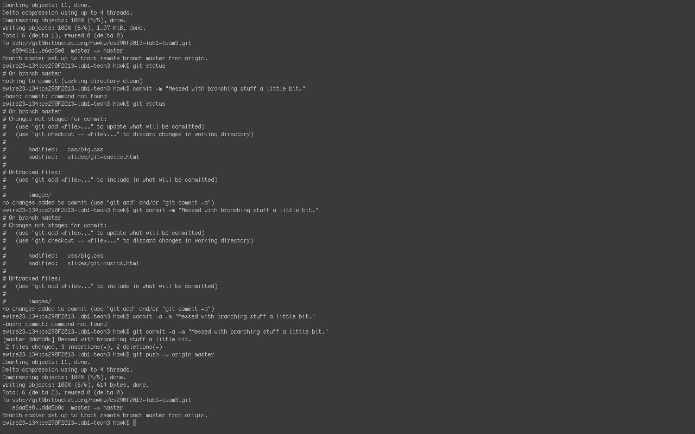

git basics
by team 3
seven
most useful git commands
git init makes the current directory into a new local git repo
git status checks if files have been modified since the last commit
git add puts files to pre-commit "staging area"
git commit records the information from the "staging area" with comments
git commit -m [message] allows you to type a commit summary from the command line
git push sends all commits to the remote repository
git pull downloads changes from the remote version of the current branch
let's talk about branching
branching is really cool
git checkout -b [name] creates a new branch called [name]
you can also use two commands, git branch [name] and then git checkount [name]
when you commit, your branch will move "ahead" of master
to merge your changes back to master, check out the branch and type git merge [name]
delete branches using git branch -d [name]